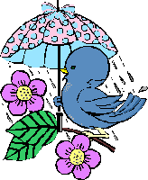
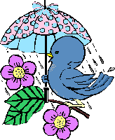

The Toast Point Limerick Contest!
Since 1995!
Squeaky-Clean Entries from February, 1998
Few and Far Between
How should warnings be passively aired,
Now it's March? ... "Let the Ides be bewared!" --
Or "the Ides be beworn!"?
You can see how I'm torn ...
.. Oh, excuse me, should I have said teared?
Ystap writes 03/01/98
Alaska's too cold for my likin',
I'd rather be beachfront and bikin',
So I'll sit here and hack
And plan my attack
On Key West and Margaritaville hikin'!
The poet comments, "Cheeseburger in Paradise anyone???"
The Godiva box gave up the necklace,
And Susan's the winner, tho feckless
Was her winner's quote,
"I'd never wear it," she wrote,
Seems the necklace, to her, is too reckless!
The poet comments, "She bought the box of chocolates for herself on Valentine's Day!
What, no beau, Susan???"
In Lent, kids are always complaining:
No candy on which to be training.
Then an Easter choc spree
Makes them sick -- which, to me
Proves no good ever comes from abstaining!
Yarg writes 02/25/98
 An angry professor revealing
An angry professor revealing
The intensity of his feeling
Rammed his foot through the floor
And his fist through the door
On his way to hitting the ceiling!A young English teacher of note
Wore a hole in his coat
At the elbow, it seems,
Grading poor English themes.
How awful them kids must of wrote!
I just met this tap-dancing plumber!
And I've never met anyone dumber.
While he worked, he would dance,
Leaving open to chance
That his work would turn out a bummer.
There onth wathe a thtudent named Judith
Who thpent all her thummerth a nudetht
The wathe athe red athe a rothe
Cauthe the thunned with no chlothe
Oh the was jutht thimply the cutetht!
Basketball is an exciting sport
Watching the players run across the court
Dribbling and scoring
Never does the game get boring
Unless the game gets cut short!
The poet comments, "I wrote this when I was in the 8th Grade."
Ve riled up the great Sigmund Freud.
That vizard was really annoyed.
Ve called him a qvack,
And he had to fight back.
From his lips came a bold, nasty void.
Ystap writes 02/23/98
Where Beelzebub went, we know not,
His limericks were cool and red hot,
Hasn't posted for days,
So now maybe his craze
Is fiction writing, sans title or plot!
The poet comments, "Where is that little devil?"
A sushi bar that delivers?
Now, that thought gives me the shivers!
Boiled Puffers and Blowfish,
Sea Urchin's a nice dish,
If you like fish that twitches and quivers!
The poet comments, "Sayonara sushi!"
The wise one, our Sage, gave a star
To my lines, although read from afar.
It occurs to me now
That he liked them somehow.
Amateurish, but quite on a par.
Cassiopeia said, "Sorry to trouble you,
But I find that I'm seeking another view
As to what eyes do see
Looking skyward for me,
And all they can find is a double-U."
The poet comments, "In the neighborhood of Andromeda?"
NASA thinks that its rover on Mars
Beams back pictures of Mars rocks and spars ...
But it intercepts free
Martian cable TV
Bringing Tucson to Mars VCRs!
The poet comments, "Ever thought of a first-two-lines competition? ..."
Um...no...?
NASA thinks that its rover on Mars
Beams back pictures of Mars rocks and spars ...
But the Mars government
Has had Tucsonscapes sent --
Or we'd learn Mars has houses and cars!
John F. Shminkinbaun writes 02/22/98
There was an old man named Hooper
Who walked around in a drunken stupor.
He got mugged by a guy
Who nailed him with a pie
And exclaimed "isn't that super!"
The poet comments, "true story"
Ystap writes 02/22/98
The Anthrax is safe, so they say,
The Feds send both the perps on their way.
But the keywords here
Are "RUMOR" and "FEAR",
And let's add "MEDIA" to the fray!
The poet comments, "A plot to boost the gasmask industry???"
Triple axel, triple toe-loop, how thrilling!
To see these jumps landed without spilling
Those flashy ice skaters
To the deck like old 'taters,
Seems their legs would be all but unwilling!
The poet comments, "Curling is a lot easier!"
On a Saturday night, up on Mars
Nasa thinks, Rover's filling rock jars ...
But a Martian golf school
Has usurped the module
To drive round hitting nine-under-pars!
There once was a traveling Hispanic
Who arranged for a trip on "Titanic".
The ship hit some ice
The rest isn't nice
And now he's part Oceanic!
FCA writes 02/19/98
Years ago while on leave in Lahore
I met a ghost who was gay, whilst ashore.
When I said, "You're a poof"
I thought he'd go through the roof -
But he didn't - he went through the door!
The poet comments, "Inane and puerile but the alliteration appeals ! "
On Saturday night, up on Mars..
Lonely green swots recite their three Rs ...
Which means radioactive
Remotely attractive
Rays kidnapping earthlings from cars!
The poet comments, "??? ... Nah! ...."
On Saturday night, up on Mars..
Lonely green swots recite their three Rs ...
Though they count mighty fine
And read Sex Ads online -
Alas, SAs they write never parse!
The poet comments, "Never could resist a pun!"
Patrick writes 02/19/98
There once was a woman so pure
That her fame in this decade is clear
She was nearly a saint
And once she did faint
When she saw a canary manure.
There was a young lady named Rose
Pursued by two different beaus
She hated the cad,
Fell in love with the lad
But when Titanic went under, he froze.
The poet comments, "James Cameron's "Titanic" summed up in 5 lines"
Yep, that's about it! And not nine bucks to read it, either!
FCA writes 02/17/98
A Red Indian chief with three brides
When asked how he chooses, confides:
"The squaw by my side
On the hippopotamus hide
Equals the squaws on the other two hides."
The poet comments, "This mimicry of Pythagorus Theory was a schoolboy joke when I was schoolboy! and has probably been enlimericked (although I can find no trace.) Apologies for any copyright infringement!"
Ystap writes 02/17/98
Setting free something loved is a heartache
Holding on would bring only more heartbreak.
If it never comes back
Then you've proven your tack
Was correct for your sanity's sake.
Sinking slowly from sight, The Titanic
Heaved a groan, and a few there did panic
That they would be drawn
Undersea with a yawn
When the hull vanished in the Atlantic.
Now the "tricks of the trade" are for sale,
And Penthouse has put up a bale
Of cash for a centerfold
In hopes to be oversold
When the rag of all rags tells the tale.
The whitest-of-white fur, so real,
And the eyes, burning black with such zeal,
This babe's plight is urgent
So the call is resurgent
To rescue the new baby seal.
FCA writes 02/17/98
Does your wife always nag and complain?
When she's out of her kitchen domain.
The best thing to do
Is not hide in the loo
But shorten the length of her chain!
The poet comments, "Don't really mean it - in any case I spend more time in the kitchen than my wife does !"
I learned to right English reel well.
At speling, I also excell.
I got my acumen
From good ole Ed Newman,
But I no from my pomes you can tell.
The poet comments, "English teachers may feel at home here."
The media thinks it's their role
To inform and control and cajole.
They're brilliant, although,
When they just don't know,
They refer to the wise Gallup Poll.
Some good friends of mine from L. A.
Bought into a gold mine, they say.
They expect a cash cow,
But it looks as though now
They really just bought a cliche.
Ystap writes 02/16/98
Bedfellows make strange politicians,
No exception are those old Patricians
Who go 'round all haughty
But, in fact, are so naughty
They could easily be labeled "clinicians."
The poet comments, "Sign of the times??"
"Maybe next time," she said with a smile,
Walking swiftly away. His profile
Was deflated and grim
'Cause she rebuked him
Once again, with a grin and some guile!
The poet comments, "Ah, that water cooler!"
The oyster, from sand, made a pearl
Of such beauty, would please any girl.
Though 'twas only a grain,
The sand gave him great pain,
Caused the oyster to twist and to twirl!
The poet comments, "Doin' the "oyster rock"!"
Once I heard a young valentine sing:
"I adore the red roses you bring
And your sweet serenade ...
But for kisses to trade
You must first buy a diamond ring!"
FCA writes 02/13/98
"You're a chauvinist pig", my wife doled
In a temper that wasn't controlled.
I replied, "You are right" -
(I was being contrite)
"But not when you do as you're told" !
Old Socrates made an impression
With debate and sagacious expression.
He did not corrupt youth,
While he searched for the truth.
It was the world's oldest bull session.
The poet comments, "The root word is Sage."
DrWryme writes 02/13/98
A nice young Ostrich named Gary
Pined for the Zoo's Cassowary.
The Director said,
"All right, share your bed
But with your genes, you can't marry."
The poet comments, "From my collection I call Bozo's Zoo."
Sumaq writes 02/13/98
I just met this tap-dancing plumber!
Who played xylophone as a Mummer.
The pipefitting musician
(Yes, too, a physician)
Had no time to vacate last summer.
Toast Point shudders, as he remembers Mummer Fever every New Years Day during his seven years in Philly.
In la plus belle province de Quebec
Live beaucoup belles femmes et beaux mecs
But they bundled up tight
In the darkness of night
As Quebec the ice storm did wreck.
Ystap writes 02/13/98
I have this bad dream, so I vent
My concerns for the message not sent.
If I die in the night
And Ystap cannot write,
Will my cyberfriends know where I went?
The poet comments, "Maybe put a message in the will??? LOL"
She said, "honey, you know what my wish is?
It'd be nice if you helped with the dishes".
She had a stroke
From the dishes he broke.
Now he spends his time where the fish is.
Toast Point swears he wrote his valentine's limerick above before he read this one...
Elizabeth Hunter writes 02/12/98
Fred was a lucky little toad
Merrily hopping down the road
But an ice cream truck
Stole all his good luck
And now he is toad a la mode!
Ystap writes 02/12/98
Fri the thirteenth and a full moon
All in one week, oh, woe is me! Soon
I'll be hearing the howls,
See the faces with scowls
On clients who sing a MAD tune!
The poet comments, "You can't please 'em all!"
If it's true cows take grass all day long
And snowboarders drink milk to stay strong ...
Should a tiny grass trace
In his sample efface
That Ross won the Olympic gold gong?
I just met this tap-dancing plumber!
A real toughie - in fact a real bummer
I've been wasting my time
Trying to think up a rhyme
So I'll put it on hold 'till the summer!
A Grinding Transmission (GT)
A Lousy Engine's LE.
Loose Steering's LS
Gas-fouled spark plugs, GS.
Scored Cylinders, we call SC.
The poet comments, "Inspired by Click and Clack, an auto column"
Ystap writes 02/11/98
With reference to "crab", Mr. B,
I certainly hope you did see
From the crab I'm a Cancer,
And the "crab" is a dancer,
Are you ready to boogie with me?
Tai Chi? Not for me! Please don't ever
Try to stretch me or pose me. I'll never
Believe those Chinese
Who say, "It's a breeze!"
'Cause my body is just not that clever!
The poet comments, "Tooo painful for humans!"
"How can we print just a page,
Or two?". asked Al Willis, the Sage.
From the File / Print menu,
Just select one or two.
Use Explorer - it's all just the rage!
The poet comments, "This is of course, I'm assuming, loads of paper, poor Al's still consuming.
And with that free advice, I've just given nice -
no wonder my business ain't booming!"
Doctor Wryme writes 02/07/98
Most modern art seems waste of paint
But only the crude dare voice complaint.
They show little skill,
No purpose fulfill,
While maybe art, pictures they ain't!
I roamed a junkyard yesterday.
A home for old folks' final stay.
They'd love to be missed,
But simply exist.
Better off dead than thrown away.
This enchanting New Englander,
Our beaches, loved to meander.
Her garb, we confess
Left nothing to guess
While sun had to blush while it tanned her!
The poet comments, "Got a million of them and no audience."
Beelzebub writes 02/07/98
To distract from his scandals and scam,
Slick Willie drops bombs on Saddam.
Strange to say, no one asks
Who sells "mad dogs" anthrax;
The answer, of course: Uncle Sam!
I went fishing offshore catching grunions.
Now my feet are all sore from my bunions!
But those fish fry up nice
With some butter, red spice,
Some black pepper, white wine and green onions!
A Limerick naughty and rude
Is easy to write if you're lewd
But to write one that's clean
Like on Toast Point you've seen
Use a squeaky clean, good 'thought for food'!
Ystap writes 02/05/98
Where is Netscape with its magical powers?
You could browse on the Internet for hours,
Now with IE four-oh
It's so maddeningly slow,
When I download, I head for the showers!
The poet comments, "Zzzzzzz...I'm still waiting to load!"
Cats, rats and baseball bats!
It;s raining again in these here flats,
I'm floating away
On this thunderous day
And so are my mats and my hats!
The poet comments, "Into each life a little rain must fall...and fall, and fall,,,"
On Saturday night, up on Mars
He was strumming my fate on guitars
And choking me soft
With the words that he coughed
And left me with permanent scars.
The poet comments, "Life just ain't the same up there!"
On Saturday night, up on Mars
I saw Elvis in one of the bars
Hordes of groupies were there
Tossing panties in air
And drooling with oohings and aahs!
Note to the poet - don't worry, it's not that naughty.
Krista C. writes 02/04/98
Anthony is my sweetheart
He tastes like a warm sweet tart
His sweet tender kiss
Sends me a sweet bliss
Time to meet him at the mini mart.
FCA writes 02/04/98
On Saturday night, up on Mars..
They post limericks on a website like ours.
The Martian sages who scan it
Award the best a "Red Planet"
More liberally than we get "Gold Stars" !
The poet comments, "But one Gold Star = 10 Red Planets, naturally !"
Lucky writes 02/04/98
Two horses -so they say-
One wintery Valentine's day,
Had some food and debate
Sharing a tête-à-tête,
And marriage, they felt, was OK.
If a one-ar star shines in his sky
Then Bill Clinton's a talkative guy ...
If a two-ar star shines
Then the White House declines
To say what might have happened, or why!
The poet comments, "Tuesday, re-dos day! ... well,
yesterday's version got such a huge thumbs down around here ...
but, as I explained:"
Lim'rick quality varies a lot
Some are clever, and others are not
Some are hits, others miss
Some are boring, like this ...
But they all end up here, in this spot!
On Saturday night, up on Mars
I bought me some Martian cigars
They gave off a stench
Pretty much like those French
Oops, that should read... 'those French Gauloises'!
When a one-ar star shines in Bill's sky
From his very own lips, answers fly...
But a two-ar Starr shines,
So the White House declines
To say where any answers could lie!
The poet comments, "Monday, pun day!"
Ystap writes 02/02/98
They're calling the Prez "The Big Zipper"
"A new rock group?" asks Hillary, chipper,
"Well, he does play the sax,
Tell the country to relax,
We'll leave it all to Al and to Tipper!"
The poet comments, "Oh, No, Mister Bill!!!!!"
Mike M. writes 02/02/98
Who runs in the whole human race?
And just where should I keep the pace?
Can a pro be a con?
Is an oxymoron
A dope with a pimply face?
I just met this tap-dancing plumber!
Can't think of anything dumber!
'Cept a dog in a dress,
A burlap vest,
Or a snowman who really likes summer!
Beelzebub writes 02/02/98
When I saw Patsy first from the cab,
She appeared nothing other than drab;
But the distance deceived,
For I quickly perceived
That close up she resembled a crab.
The poet comments, "Happy Valentine, Ystap - or possibly the
reverse ..."
Beelzebub writes 02/01/98
Thanks to the effect, one assumes,
Of the pressure of internal fumes,
The corpse of Lord Crate,
While lying in state,
Exploded and spattered three rooms.
Ystap writes 02/01/98
When Valentine's Day comes around,
All the pent-up sentiments abound,
They send flowers and cards
With words from the Bards
In hopes that true love can be found!
The poet comments, "2/14 A Red Letter Day!"
Now, guys, send your girls hearts and flowers,
And poetry too, meant for hours
Of sentimental reading,
But don't be misleading,
'Cause us girls have those "see-through-you" powers!
The poet comments, "2/14 Doth my mail bag runneth over? Nah..."
I get discounts on my monthly web page bill if I display this button. I get
even more money off if you click the button - try it and see!